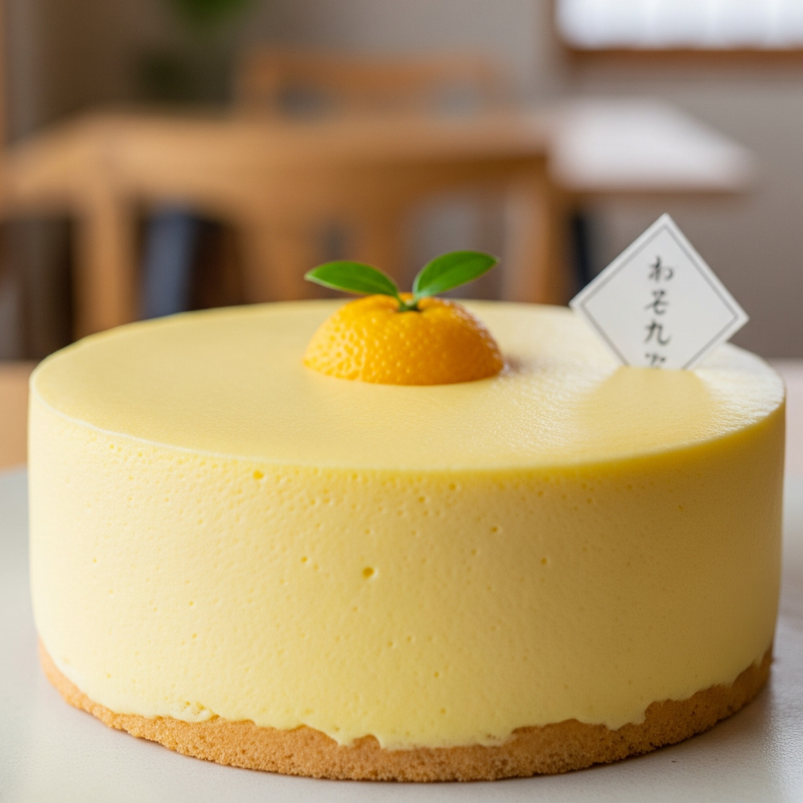
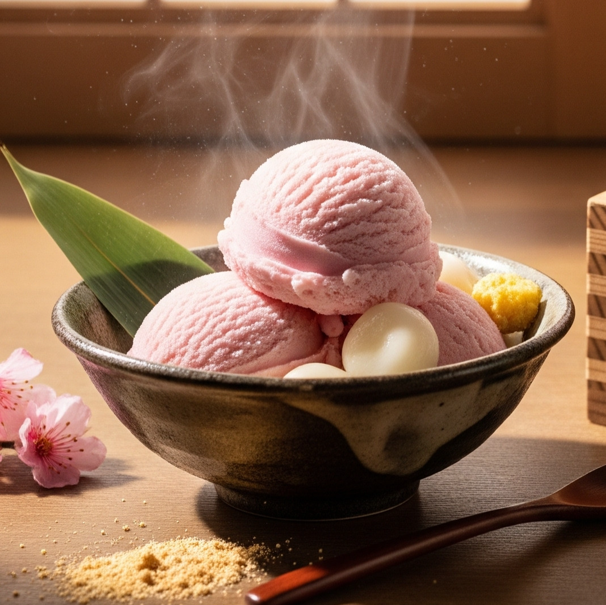
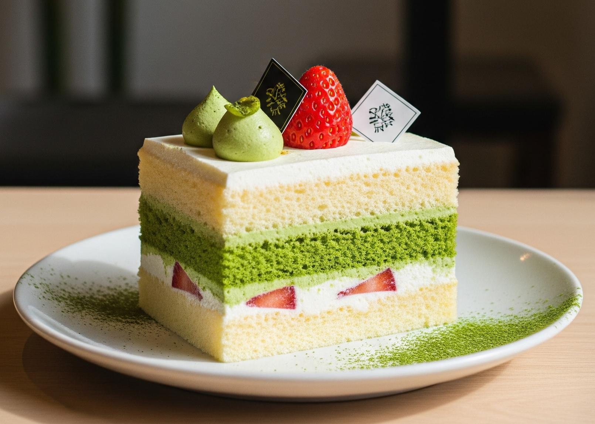
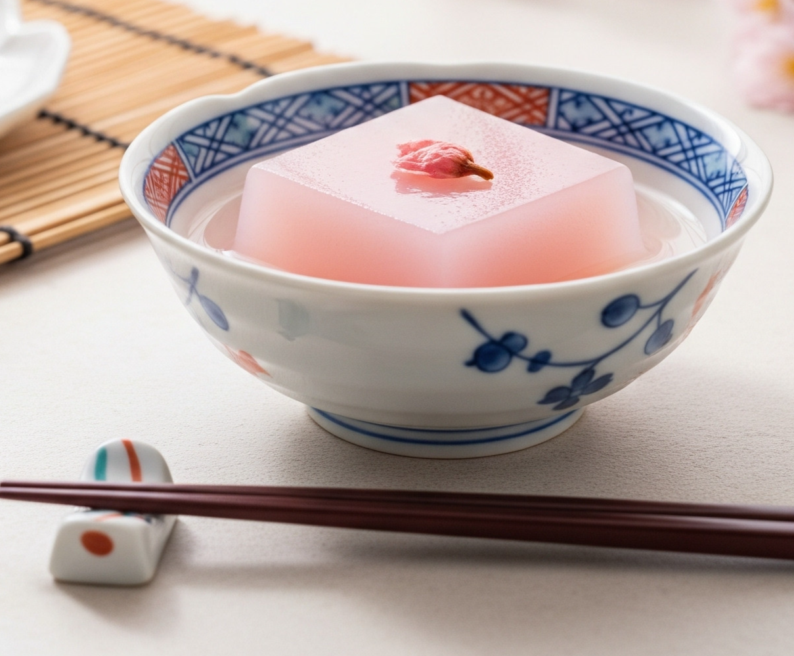

Postres

Tarta de mousse de yuzu
Suave y cremosa, con el toque cítrico y refrescante del yuzu japonés.
$95.00

Helado artesanal de arroz dulce
Cremoso helado inspirado en el clásico mochi con un delicado sabor a arroz dulce..
$85.00

Gâteau de matcha y vainilla
Esponjoso pastel que equilibra la intensidad del matcha con la dulzura de la vainilla.
$90.00

Kanten de flor de cerezo
Gelatina tradicional japoneda con aroma sutil a sakura, ligera y refrescante.
$80.00De temporada

Gâteau de matcha y vainilla
Exquisita tarta que equilibra lo amargo del matcha con la dulzura de la vainilla.
$90.00
Kanten de flor de cerezo
Gelatina tradicional japonesa con aroma sutil a sakura, ligera y refrescante.
$80.00
Parfait de Fresa y Matcha
Capas de fresas frescas, crema de matcha y crujiente granola.
$75.00
Kakigori de Yuzu
Hielo raspado con sirope de yuzu y mochis pequeños.
$65.00Visítanos:
- Marsella 39, Colonia Juárez
- Av. Peter Barros Sierra 540
- Cedro 71, San Rafael
Contacto:
hananoyorucafe@gmail.com
Lunes - Jueves
11:30 - 14:30, 18:00 - 22:30
Viernes y Sábados
11:00 - 14:00, 18:00 - 22:30
Domingos
11:00 - 14:00